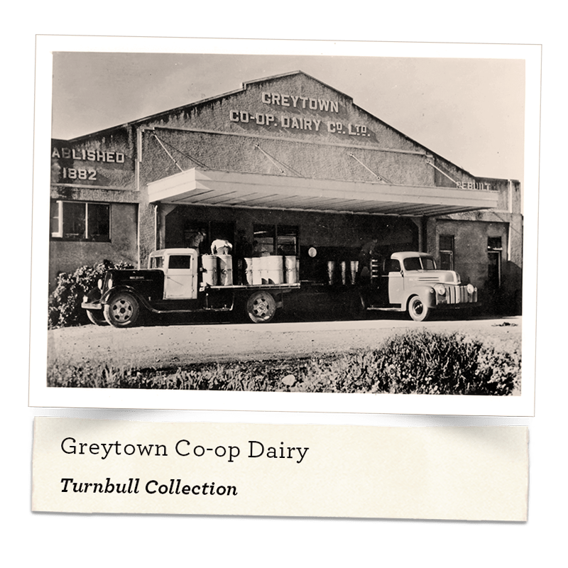
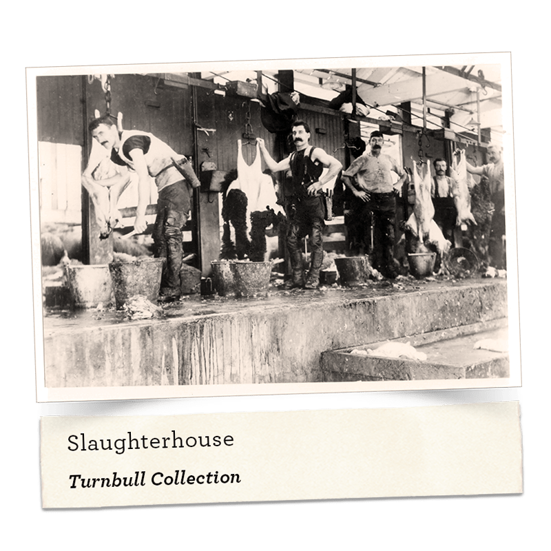
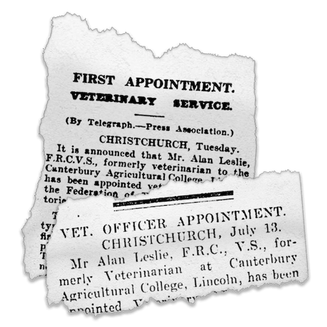
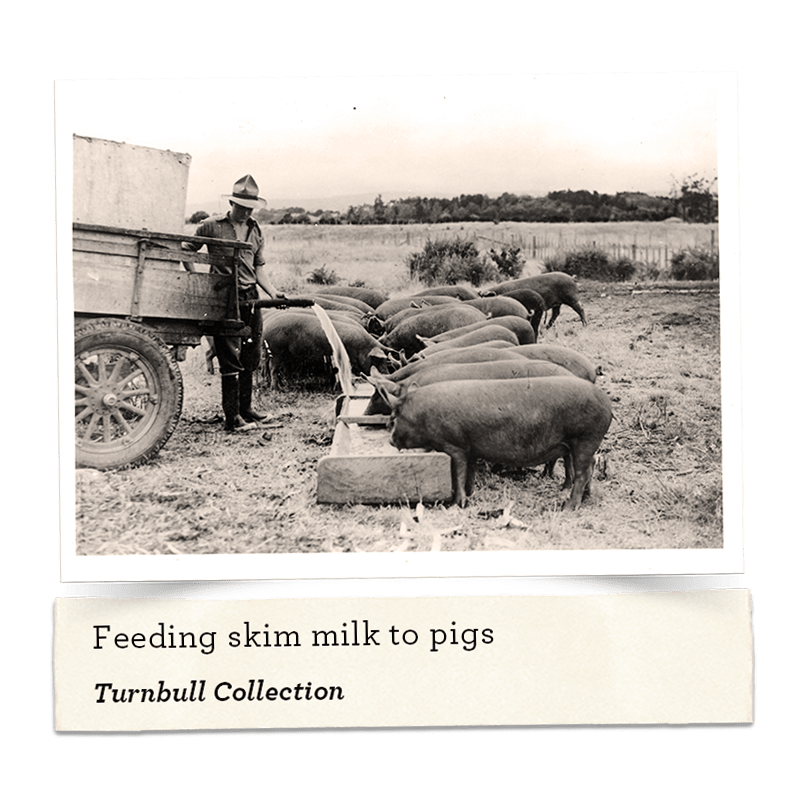
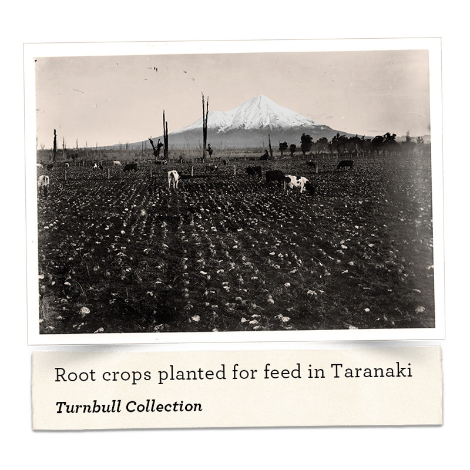
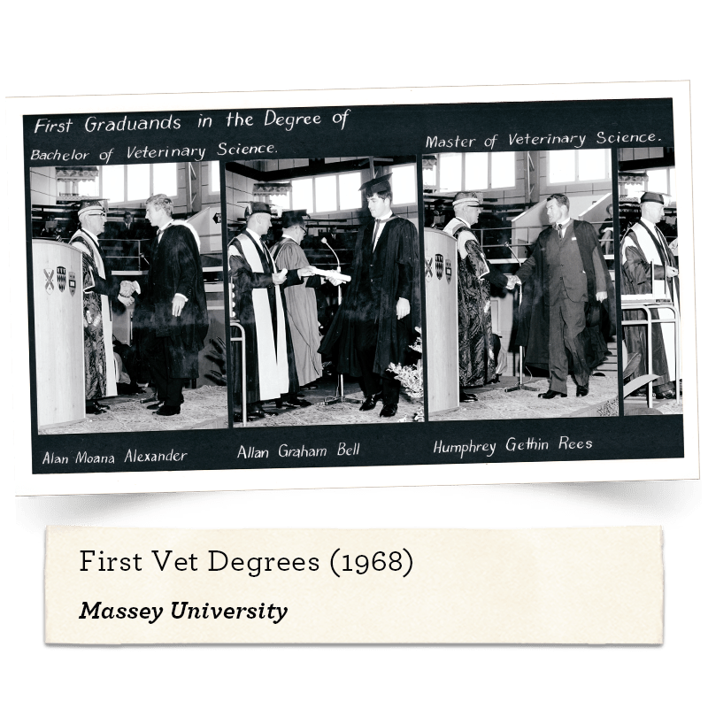
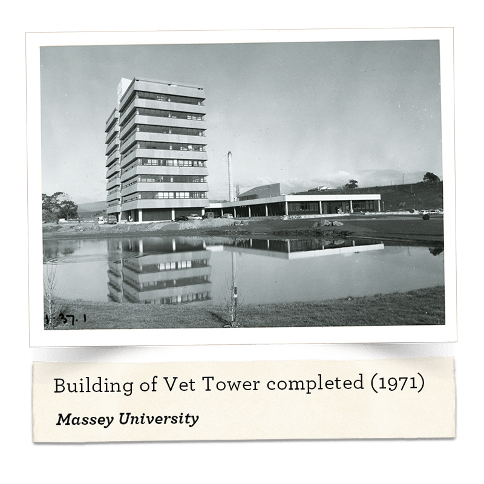
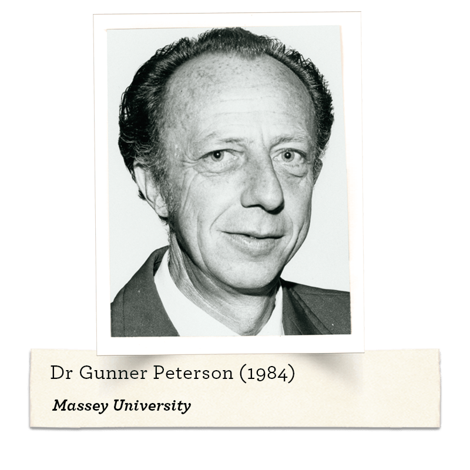
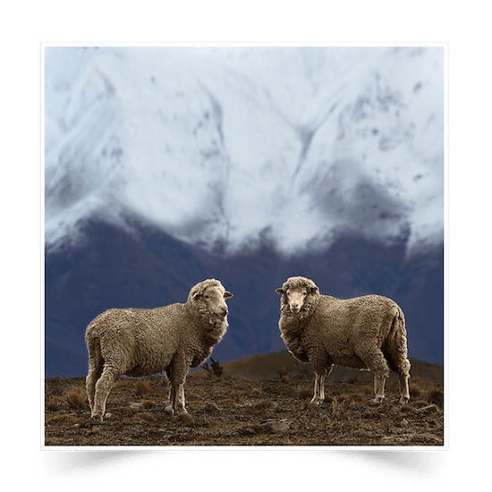
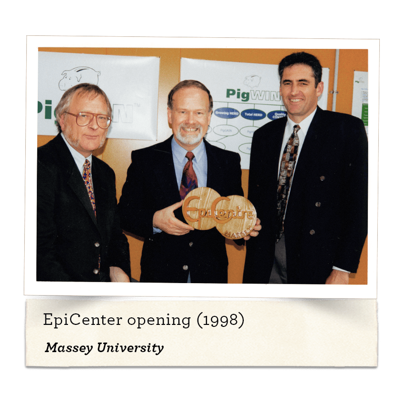

Case book of vet in Balclutha shows many calls for calving, metabolic disease, turnip poisoning, lameness and colic in horses
NZVA History Wall
1923 - 2023
Scroll through the rich history of the veterinary trade in New Zealand
⌄
1920s
1920s
1923
New Zealand Veterinary Association (NZVA) formed with 26 foundation members; Chief Veterinary Officer CV Reakes was the first President; NZVA was active in promoting compulsory veterinary registration based on educational qualifications
1925
1926
Veterinary Surgeons Act passed; and the Veterinary Surgeons Board was formed for the compulsory registration of veterinarians, including those who had been practising for 10 years or more.
48 veterinary practitioners and 52 qualified veterinary surgeons were registered; veterinarians trained in British and Australian veterinary schools, as well as graduates from Pretoria and Ottawa veterinary schools and others with equivalent training
1928
Melbourne Veterinary School closed
1930s
1930s
1930
Animal Health Notes by Wallaceville staff published
Calcium borogluconate used to treat hypocalcaemia/milk fever
Cobalt deficiency identified as cause of ill thrift in sheep
1931
Stock Act lists scheduled diseases
1932-33
Swine fever outbreak in the Wellington area caused by offal from an overseas ship; controlled by slaughter and disinfection
1934
Classical Swine Fever outbreak occurred and controlled
First recorded cases of salmonellosis in pigs
Stock Remedies Board first formed
Hypomagnesaemia described in grass fed cattle


1935
Artificial Insemination services investigated by Tom Blake, a government veterinarian
1936
New Zealand Government sends six bursars to Sydney Veterinary School; they graduate in 1938
Diseases of Breeding Ewes by Leslie published
1938
Allan Leslie:
"Ye canna ca ye self a vet until ye've filled a paddock fu o deid coos"
Started the traditional veterinary club movement at Eltham

1939
Model contract of employment for veterinary clubs developed by NZVA
Meat Act passed
Ruakura Research Station established
1940s
1940s
1940s
Copper deficiency disease identified in cattle and sheep
Eradication of tuberculosis from many town milk supply herds
1941
Training camps for mounted regiments held in New Zealand
1943
Dominion Federation of Farmer Veterinary Services Inc established to coordinate veterinary clubs
Joint Veterinary Committee of the Dairy and Meat Producer Boards provide bursaries to train veterinarians at Sydney University; no women included!
Pigs: their feeding and Diseases by Leslie published
1944
11 veterinarians arrived from Britain 14 bursaries awarded
Geographical Branches of NZVA established
Veterinary club for meat and wool producers established at Gisborne
16 bursaries awarded
Around 100 veterinarians in New Zealand, mostly in government service
Trentham Veterinary Laboratory (later Tasman Vaccine Laboratories, now SKF) established
Recruitment of veterinarians from Britain, Canada, The Netherlands and Denmark
1946
Mandatory pasteurisation of town milk to control human infection from bovine tuberculosis
Veterinary Services Council formed, replacing the Dominion Federation of Farmer Veterinary Services Inc

1947
First report of excessive teeth wear in sheep
New Zealand Veterinary Corps disbanded
Report on the use of penicillin in small animals in New Zealand published
1948
First recorded cases of salmonellosis in cattle
Most common cause of bovine mastitis was Strep agalactiae
1949
Commercial Artificial Insemination services available in the Waikato and Taranaki
First recorded cases of salmonellosis in sheep
Penicillin used to treat mastitis in cattle

1950s
1950s
1950
No feline vaccines
First humane slaughter regulations for New Zealand
NZVA recommended fees
Service |
Fee |
2023 NZD |
|---|---|---|
| Bitch spays | 3 - 4 guineas | $230 - $350 |
| Cat castration | 15 shillings (including anaesthetic) | $60 |
| Cat spays | 2 guineas | $160 |
| Surgery consultations | 10 shillings and 6 pence | $40 |
| Visits | 10 shillings and 6 pence, plus mileage of 1 shilling each way after the first two miles | $40 + $4 each way |
1950
Two registered veterinary surgeons and three registered veterinary practitioners (not university trained) in clinical practice in Auckland
Eight women registered as veterinary surgeons in New Zealand
Leptospira pomona identified as the cause of haemoglobinuria in a calf
Ovine brucellosis, a cause of epididymitis and abortion, identified
1950s
Bursary for veterinary students $430 pa; salary for veterinarian $950, rising to $1800 by the end of the decade; partial bursary repayments $200 pa
Dairy veterinary clubs - one vet per 12,000 dairy cows; 50,000 km per year
Distemper immunisation achieved by simultaneous inoculation of antiserum and live virus!
Veterinary pharmacy contains nux vomica, zingiber, plaster of paris bandages, thermometers, pestle and mortar, calcium borogluconate, magnesium sulphate, Nembutal, ether, chloroform, iodine, zinc sulphate, M&B 693 (sulphadimidine), chloral hydrate etc.
1951
Compulsory tuberculosis testing of town milk supply herds; 7.7% reactor rate
1952
Animal Industry Division of the Department of Agriculture established
First issue of New Zealand Veterinary Journal (NZVJ) - Editor, Jim Newhook
First report of Campylobacter (Vibrio) abortion in sheep
First report of Johne's Disease in sheep
Scrapie first diagnosed in New Zealand (eradicated by 1957)
1952-57
NZVA office in Hamilton with Tommy Thompson as Secretary
1953
First report of periodontal disease in sheep
Most recent outbreak of Classical Swine Fever; eliminated by slaughter
1954
Elizabeth Veterinary Benevolent Fund established
First report of Toxoplasma abortion in sheep
1955
Ruakura Diagnostic Station established
Clinical veterinary services available to almost all livestock owners in New Zealand
1956
Infectious disease identified as the major cause of mortality in young dogs
Lead poisoning in dogs identified
Macrocarpa poisoning identified as a cause of bovine abortion
Scrapie introduced with a shipment of Suffolk sheep; eliminated by slaughter of imported animals and associated bloodlines
Veterinary Surgeons Act rewritten; system for the registration of veterinarians virtually unchanged
1957
Selenium discovered to be an essential trace element
1958
NZVA published the first edition of the Veterinary Handbook
Tuberculosis testing of factory herds introduced
1959
Hydatids Act to control Echinococcus granulosa (hydatids)
Taieri Diagnostic Station established
The cause of facial eczema identified as a fungal toxin
1960s
1960s
1960
Dieldrin identified as a cause of poisoning in dogs
Manktelow identified Pityrosporum canis (now Malassezia sp) as an inhabitant of the canine ear canal and a potential pathogen
1960s
Development of exclusively small animal practices in cities such as Auckland, Christchurch, Dunedin and Wellington
Veterinarians involved with developing heart valve transplant techniques in Auckland
Most common cause of bovine mastitis was Staph aureus
1961
Compulsory tuberculosis testing of all dairy cattle
1962
Ira Cunningham appointed Foundation Dean of the Veterinary Faculty at Massey University
Export game industry established
Ros Baxter opens modern small animal facility in Auckland

1963
Animal Health Division and Meat Division formed from the Animal Industry Division of the Department of Agriculture
Veterinary Advisory Officer positions established
1963-64
‘Contract' practice introduced to veterinary clubs
1964
One female veterinary undergraduate at Massey University
First Ram Soundness seminar
Introduction of thiabendazole, the first systemic anthelmintic for livestock
Veterinary Faculty opened at Massey University
1965
Massey University Clinical Services Unit established
1966
Compulsory vaccination of heifer calves with Brucella abortus strain 19 vaccine
1967
NZVA Hip Dysplasia scheme established
21 students completed the BVSc course at Massey University
Hemobartonella felis identified in New Zealand
Lloyd Whitten became Editor of the NZVJ
Tuberculosis diagnosed in a possum
Whangarei Diagnostic Station established
Animal Remedies Act passed

1968
Lincoln Diagnostic Station established
1969
The five Diagnostic Stations consolidated into the Animal Health Laboratory network
New Zealand Women's Veterinary Auxiliary established
Thiamine deficiency identified as a cause of nervous disease in working dogs
Voluntary brucellosis test and slaughter policy introduced
1970s
1970s
1970
Mannosidosis identified in New Zealand cattle
Sheep Branch, later the Society of Sheep and Beef Cattle Veterinarians, of the NZVA formed
Tuberculosis first diagnosed in feral deer
1970s
Part time veterinary nursing course established at Auckland Polytechnic (now AIT)
Deer farming established in New Zealand
Veterinary nursing scheme established in Auckland
About 6% of veterinary undergraduates at Massey were women
1970-87
Studies at Massey on the equine larynx including laryngeal hemiplegia
1971
Australian College of Veterinary Scientists founded
Compulsory brucellosis test and slaughter policy introduced
Tower Block of the Massey Veterinary School opened
Trials of a respiratory vaccine against feline herpes virus infection

1972
Small Animal Society (SAS) formed
Commencement of control of infected possum populations
Compulsory tuberculosis testing of all cattle
Start of national eradication programme of bovine brucellosis using CFT
1973
Central Animal Health Reference laboratory established at Wallaceville
First survey of lameness in dairy cattle
Palmerston North Animal Health Laboratory established, initially at Massey and then at the Batchelar Homestead
NZVA Foundation for Continuing Education (VetLearn) established
1974
Royal College of Veterinary Surgeons approves Massey veterinary course
Scrapie diagnosed in imported sheep; eliminated by slaughter of imported animals and associated bloodlines
1975
Feline infectious peritonitis reported in New Zealand
1976
Culmination of 2½ years trial of Planned Animal Health and Production Services in the Waikato - 13% financial gain
NZVA produced a Companion Animal Report for the New Zealand Local Bodies Association
1976-79
Aujeszky's Disease in pigs diagnosed and eradicated
1977
All cattle herds under test for tuberculosis
First published report of an inherited disease in a specific breed of dog in New Zealand Introduction of pre-slaughter stunning
Michael Berwyn-Jones became Editor of the NZVJ
Executive Office of NZVA moved to Wellington; contact with Federated Farmers, Ministry of Agriculture and Fisheries, producer boards et al, also politicians, established

1978
New Zealand commenced an eight year period of running workshops in animal disease control for the developing countries of South-East Asia
Tuberculosis first diagnosed in farmed deer
1979
Canine parvovirus first reported in New Zealand Cat leprosy reported
Cats identified as the definitive host for Sarcocystis spp First report of anthelmintic resistance in sheep
Introduction of a leptospiral vaccine for cattle
1980s
1980s
1980
30% of veterinary undergraduates at Massey University were women
Graham Meadows became Editor of the NZVJ
1981
Endophyte identified as the cause of ryegrass staggers in sheep and other species
Yersiniosis first diagnosed in deer
1982
Malignant catarrhal fever first reported in farmed deer
Mannosidosis control programme completed
1984
After-hours service established in Auckland
New edition of the Veterinary Handbook, edited by Bill Manktelow, published
New Zealand declared free of Brucella abortus
1985
Centre for Veterinary Continuing Education established in the Veterinary School by collaborative agreement between Massey University and NZVA/VetLearn
Gunner Peterson appointed as the first full time Director of the Centre for Veterinary Continuing Education
Last isolation of Salmonella pullorum from poultry Voluntary control of tuberculosis in deer herds

1986
Animal Health Services Centre established within the Veterinary Faculty
Botulism reported in a dog resident near Hamilton Lake
Equine Blood Typing and Research Centre established within the Veterinary Faculty
First private veterinary diagnostic laboratory established in Auckland (by Mike James)
Julie Lord became Editor of the NZVJ
Veterinary Services Council in abeyance
1987
MAF reorganised into four services; further changes saw the division of policy and delivery services
Veterinary Professional Insurance Society Inc (VPIS) established to provide indemnity and public liability insurance for the veterinary profession and NZVA members
Report of vesicular stomatitis in pigs caused by the phytotoxin furanocoumarin
Toxacara canis identified as the cause of retinal disease in rural dogs
Toxoplasma vaccine developed
1988
Animal Health Laboratory established at Lynfield, Auckland
1988
First issue of VetScript

1989
Second International Conference of Sheep Veterinarians held in New Zealand
Feline immunodeficiency virus infection reported
Major causes of dairy cattle lameness identified as poor raceways and poor animal handling
1990s
1990s
1990
Andrew Keber became Editor of the NZVJ
SAS renamed Companion Animal Society (CAS) and became a Special Interest Branch of NZVA
Restarted CAS newsletter; Editor, Boyd Jones
CAS practice standards started by Nick Twyford Compulsory tuberculosis testing of deer herds
1991
National code of practice for velvet antler removal in deer developed
Neospora canis identified as a cause of bovine abortion
New Zealand Veterinary Nursing Association becomes an NZVA associate member
1992
Best Friend Feline Nutritional Research Unit established within the Veterinary Faculty
830 veterinarians in clinical practice
1993
330 women registered as veterinary surgeons in New Zealand; 1900 total registrants
Biosecurity Act passed to prevent introduction of disease and to enable disease surveillance and management
1994
Veterinarians Act passed; Veterinary Council of New Zealand (VCNZ) established with emphasis on public protection; specialist registration permissible
VCNZ takes over ownership of Code of Professional Conduct (COPC) from NZVA
1995
Survey of anaesthetic machines in small animal practice - malfunctions found in over 90%
Wildlife Branch of the NZVA published Kokako, a twice-yearly bulletin
1996
Emergence of Salmonella Brandenburg as a significant cause of abortion in sheep
Last reported case of Echinococcus granulosa (hydatids) in sheep

1997
Trans Tasman Mutual Recognition Act - veterinarians who were registered in Australia recognised for registration in New Zealand and vice versa
66% of veterinary undergraduates at Massey were women
Bartonella henselae, the cause of cat scratch fever identified in New Zealand
Report of a major epidemiological survey of lower urinary tract disease in cats
Jan Fog became Editor of CAS newsletter
Companion Animal Health Foundation launched
1998
Janice Thompson became Editor of CAS newsletter
Massey University Animal Welfare Science and Bioethics Centre established
National Quality Veterinary Services (NQVS) established by NZVA

1999
MAF reorganised into four services; further changes saw the division of policy and delivery services
Australasian Veterinary Boards Council established to promote harmonisation of New Zealand and Australian occupational regulatory standards; visits and makes accreditation recommendations on all Australasian vet schools; assesses and makes recommendations on all Australasian applications for specialist registration
Gunner Peterson became Editor of the NZVJ
Peter Jolly became Editor of the NZVJ
2000s
2000s
2000
New Zealand Oiled Wildlife Response Strategy described
2001
Enactment of the Agricultural Compounds and Veterinary Medicines Act1997
2002
Survey of dogs - 14% showed serological evidence of leptospirosis
New Zealand Food Safety Authority established
2003
3rd Pan Commonwealth veterinary conference held in New Zealand
VetLearn publishing division started and SciQuest online searchable library was launched
NZVA/CAS launch BESTPRACTICE
2004
First VetScholar online course launched as a pilot by NZVA/VetLearn
2005
Veterinarians Act 2005 - new competency provisions, limited scopes of practice, public Register of Veterinarians, minimum practising requirements for the issue of a practising certificate, conditions on practice
VetScholar was officially launched by NZVA/VetLearn as an online learning medium
2006
New Zealand Three Rs Programme established for the replacement, reducing and refinement of animals used in research, testing and teaching
NZVA purchased premises in Wellington CBD (in partnership with VetLearn and VPIS)
2007
NZVA/VetLearn build integrated database
NZVA/CAS launched New Zealand Companion Animal Register
VCNZ introduced minimum practising standards - fitness to practice, recency of practice and reporting on continuing professional development activities
2008
New Graduate Rural Bonding Scheme introduced by National Government (limited rural areas)
NZVA/VetLearn and University of Sydney, Centre for Veterinary Education (formerly PGF) built new web platform
2009
NZVA/CAS successful in its bid to host WSAVA 2013 in New Zealand
NZVA/Society of Sheep and Beef Cattle Veterinarians win the right to host the 2013 International Sheep Veterinary Congress for the second time
New Graduate Rural Bonding Scheme expanded to all rural areas VCNZ publishes first veterinarian workforce analysis
2010s
2010s
2010
Amendment to the Animal Welfare Act 1999 increased penalties and created a new offence of 'reckless ill-treatment of an animal'
NZVA built website for Australian Veterinary Association (AVA)
Latest recipients of Queen's Birthday Honours: Dr Wallace Niederer for services to equine veterinary science (MNZM) Dr Jim Edwards for services to the veterinary profession and community (ONZM) Dr Peter O'Hara for services to animal health and welfare (MNZM)
2011
Massey University's Veterinary Emergency Response Team (VERT), a specialist team of veterinary professionals and the first of its kind in Australasia, assisted in complex animal rescues and veterinary treatment following the February 2011 Christchurch earthquake
VCNZ introduced compulsory Continuing Professional Development (CPD) requirements
Rinderpest declared to be formally eradicated from the world following joint efforts by the Food and Agriculture Organisation (FAO) and the World Organisation for Animal Health (OIE). Work continues to ensure rinderpest remains a disease of the past
VCNZ introduces revised Code of Professional Conduct
NZVA launched a new online learning technology ‘webinars' to connect members around the country and world for live-streamed CPD presentations
The veterinary profession around the world celebrates World Veterinary Year 2011 (Vet2011): 250 years of veterinarians working to improve human and animal health and welfare worldwide
Hon David Carter officially recognises the significant contributions veterinarians make during Vet2011 celebrations
Ann Leighton, New Zealand's first registered female veterinarian died
Latest recipients of Queen's Birthday Honours: Dr Paul Livingstone for services to veterinary science (QSO) Dr John Hellstrom for services to biosecurity (ONZM)
Dr Barry O'Neill awarded the OIE gold medal for his significant contribution to the workings of OIE, responsible for improving animal health worldwide
Massey's Wildbase, previously the New Zealand Wildlife Health Centre, was heavily involved in the clean up and rehabilitation of wildlife following the Rena ship grounding in the Bay of Plenty
2011 NZVA Conference brought together all major special interest branches into this one multi-streamed event - a huge success
2012
Dr David Bayvel was appointed a QSO for services to the state in animal welfare
Latest recipients of Queen's Birthday Honours: Dr Ron Gibson for services to veterinary science (ONZM) Dr David Mossman for services to veterinary science (QSM)
Degrees given to the first graduates of Massey University's Bachelor of Veterinary Technology programme (BVetTech)
NZVA and Ministry for Primary Industries (formerly Ministry of Agriculture and Forestry) release Animal Welfare Toolkits for veterinarians and farmers
Dr Petra Muellner became Editor-in-Chief of the NZVJ
Queen's Diamond Jubilee celebrations - NZVA Veterinary Resource Manager, Camilla, Duchess of Cornwall, visited Massey University for tours of the Veterinary Teaching Hospital, Wildbase and the Equestrian Centre
2013
Massey University celebrates 50 years of veterinary education in New Zealand
New Zealand hosts the 8th International Sheep Veterinary Congress
The 38th World Small Animal Veterinary Association (WSAVA) annual congress is hosted by New Zealand for the first time